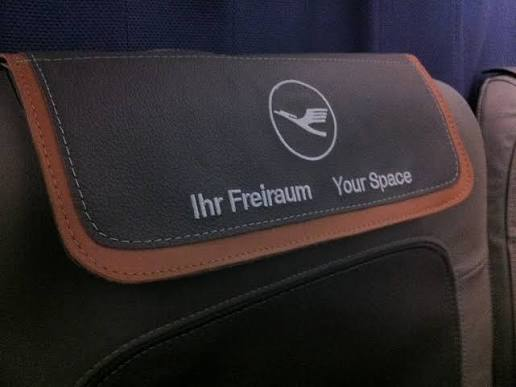

In April of 2024, Frontier Airlines began offering a new seating option called “UpFront Plus”, where the first two rows of the aircraft featured a blocked middle seat, adding extra “elbow room” to the already extended legroom seat. This was a move taken directly from the Euro Business playbook, and an easy trade-off for the airline. They essentially removed four seats from inventory and marked up the cost of the 8 seats in the “new section” of the plane. This was a low-stakes move from the airline that cost them essentially nothing. Giving up four seats that would have either flown empty or been sold at a $16 GoWild! fare in exchange for a new hard product, considering Frontier’s average load factor in 2024 was under 80%, was an easy decision. Spirit Airlines shortly followed, adding a fixed tray table in the middle seat of a few rows sold as “premium economy”. Avelo now also offers a blocked middle seat in the first six rows on the right side of their aircraft.
This concept, however, is not new to the airline industry. Let’s examine the origins of a blocked middle seat: Euro Business.
Euro Business
In the 1980s and 1990s, airlines in Europe like SAS and British Airways began competing for short-haul business travel with premium cabins and amenities on their narrowbody aircraft, experimenting with different flexible seating options. By the mid-2000s, airlines across Europe were blocking the middle seat at the front of their all-economy narrowbody planes. This photo from 2004 shows Lufthansa blocking the B and E middle seats up front. It is important to also note that these seats are not necessarily sold as extra legroom but simply as extra space side-to-side.

Euro Business is also flexible because of how easy it is to adapt the number of seats with this product. Because there’s no extra legroom, an airline can add or take away any number of seats sold as Euro Business by simply changing the headrest cover. On some modern aircraft, a small curtain can be moved forward and backward, changing the size of the forward cabin.

There is a big difference between the current offerings of budget carriers like Frontier, Avelo, and bygone Spirit, though: the soft product. In Europe, business class seats are sold with the expectation of a full meal and beverage service, larger luggage allowance, and airport experiences like lounge access, something no airline in the US offers with their blocked-middle product.
UpFront Plus vs. Euro Business
UpFront Plus
- Extra legroom
- Seat-only upgrade
- Elite upgrade eligibility
Euro Business
- Complimentary meals and drinks
- Lounge access on eligible itineraries
- Higher baggage allowance
- Flexible cabin size
Both
- Blocked middle seat
- More personal space
- Premium narrowbody seating
Euro Business benefits vary by airline, route, and fare.
The Future of UpFront Plus
It’s a confident assumption that Frontier won’t be adding inflight meals or lounge access for UpFront Plus customers, nor customers that purchase the upcoming First Class product, but the question remains: what happens to UpFront Plus when the First Class seats are installed? I believe that the new seats will take up the space of the existing (now three rows) of UpFront Plus. But I think that UpFront Plus remains a strong revenue generator, product differentiator, and loyalty consolation, and therefore, I expect it to remain a seating option even after First Class seats are installed.
I feel that Frontier could benefit from the European playbook once more by introducing more dynamic seating with UpFront Plus and offering a flexible number of seats sold this way in rows 3-6, selling one or two rows if sold, and adding more rows as needed, instead of making a blanket three rows of UpFront Plus. We’ve already seen them experiment with this last year, offering three rows on some flights and two on others. Though it’s a solid 3 rows now, could the currently standard seats become a flexible arrangement meeting market needs? Could we see the introduction of complimentary UpFront Plus upgrades for Diamond Elite members sooner than the First Class upgrade window? Or maybe we will see further enhancements at the front of the aircraft like in-seat power or added recline? (We can dream!)
I’m curious to see what eventually happens to UpFront Plus. I think it deserves a fair chance at sticking around and not being completely replaced by the new First Class seats. Only time will tell!